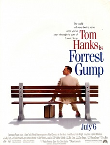

Producer:
Венди Финерман
Main actor:
Том Хэнкс
Actors:
Робин Райт, Салли Филд
Director:
Роберт Земекис
Musicby:
Алан Сильвестри
Language:
Русский
Форрест (в детстве его играет Майкл Коннер Хэмпфри) растёт в городе Гринбоу, штат Алабама. Его воспитывает мать-одиночка (Салли Филд). У маленького Форреста проблемы со спиной и поэтому он вынужден носить специальные растягивающие скобы на ногах. Кроме того, его IQ составляет всего 75, что недостаточно для поступления в обычную школу (по современной американской медицинской классификации это считается пограничной умственной отсталостью[en], границы IQ которой от 70 до 85). Мать Форреста отдаётся директору школы в своём же доме ради того, чтобы её сын смог обучаться.